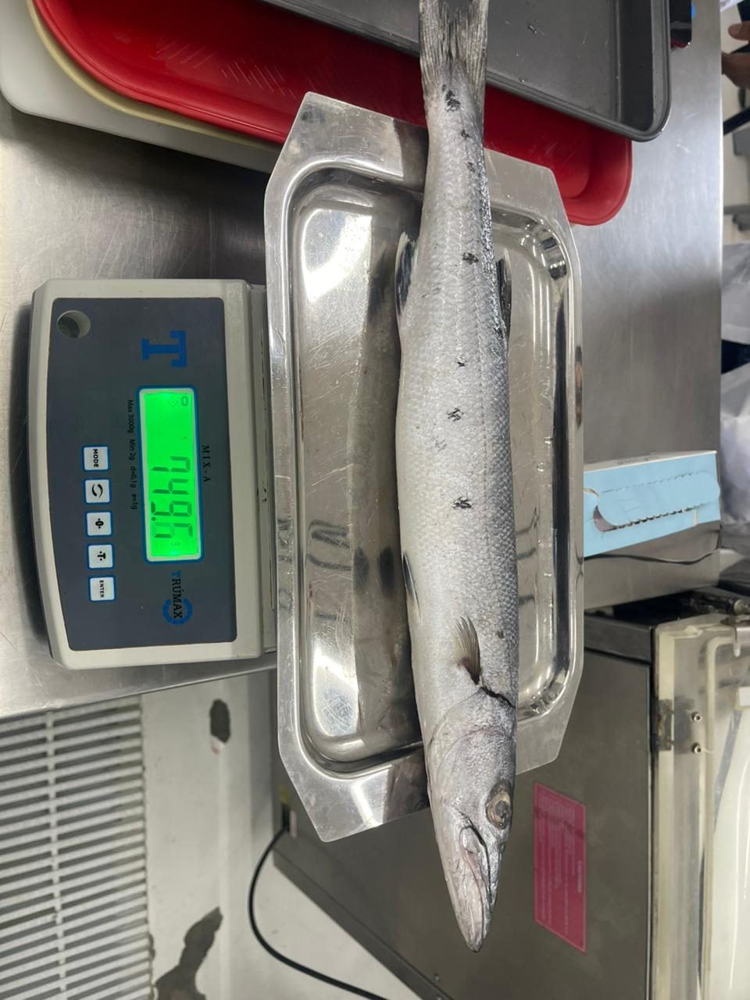

Recetas del Caribe
Métodos de preparación y paso a paso de nuestras especies
Métodos de Preparación de las Especies
En este catálogo presentamos diversas especies de importancia pesquera, acompañadas de sus métodos de preparación más comunes y apropiados. Cada técnica busca resaltar las características sensoriales de cada recurso, garantizando sabor, calidad y aprovechamiento sostenible.



Paso a Paso de Preparación por Especie
1. Lisa (Mugil cephalus)
A. Lisa asada / a la parrilla
- Lavar el pescado y retirar escamas y vísceras.
- Hacer cortes superficiales en los costados.
- Sazonar con sal, limón y especias al gusto.
- Precalentar la parrilla o plancha.
- Colocar la lisa y cocinar 6–10 min por lado.
- Verificar que la carne esté firme y opaca.
B. Lisa frita
- Lavar y secar el pescado.
- Sazonar con sal y ajo.
- Calentar aceite profundo.
- Freír a fuego medio-alto hasta dorar.
- Escurrir el exceso de aceite.
C. Lisa para ceviche / encurtido
- Filetear la carne.
- Cortar en cubos pequeños.
- Cubrir con limón o vinagre.
- Agregar cebolla, sal y cilantro.
- Reposar 10–15 minutos.
2. Barracuda (Sphyraena spp.)
A. Barracuda al horno
- Lavar y retirar agallas, vísceras y escamas.
- Sazonar con sal, especias y limón.
- Precalentar el horno.
- Colocar en bandeja con aceite o verduras.
- Hornear entre 25–35 minutos.
B. A la plancha
- Filetear y secar bien.
- Sazonar con sal y pimienta.
- Engrasar ligeramente la plancha.
- Sellar 3–5 minutos por lado.
C. Sudado o guiso
- Cortar en rodajas.
- Preparar sofrito con tomate, ajo y cebolla.
- Agregar el pescado y un poco de agua.
- Cocinar tapado 15–20 minutos.
3. Medregal (Seriola spp.)
A. Sashimi / crudo (solo si es de alta frescura)
- Lavar y retirar piel.
- Enfriar bien el filete.
- Cortar láminas delgadas con cuchillo afilado.
- Servir inmediatamente.
B. A la parrilla o al horno
- Filetear y sazonar suavemente.
- Precalentar parrilla u horno.
- Cocinar 6–8 minutos por lado (parrilla) o 15–20 minutos (horno).
C. Sellado rápido
- Cortar filetes de 2–3 cm.
- Calentar sartén a fuego alto.
- Sellar por cada lado 1–2 min.
4. Machuelo (Opisthonema spp.)
A. Frito
- Lavar y retirar las vísceras.
- Secar muy bien.
- Sazonar con sal.
- Calentar aceite profundo.
- Freír 3–5 minutos, hasta dorar.
B. En escabeche
- Freír primero el machuelo.
- Preparar mezcla de cebolla, zanahoria, vinagre y especias.
- Incorporar el pescado.
- Dejar reposar para que absorba sabor.
C. En sopas o caldos
- Lavar y limpiar.
- Preparar caldo base (verduras, hierbas).
- Añadir el pescado y cocinar 10–12 minutos.
5. Jaiba (Callinectes spp.)
A. Cocida y desmenuzada
- Lavar la jaiba.
- Hervir agua con sal.
- Añadir la jaiba y cocinar 10–12 minutos.
- Enfriar ligeramente.
- Romper el caparazón y extraer la carne.
B. Salteada
- Sacar la carne o usar jaiba precocida.
- Calentar sartén.
- Saltear con mantequilla, ajo o vegetales.
C. Entera al vapor o hervida
- Lavar bien el caparazón.
- Colocar en olla de vapor o agua hirviendo.
- Cocinar 10–15 minutos.
- Servir entera.